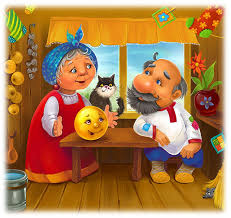

Жили-были старик со старухой.
Вот и говорит старик старухе:
— Поди-ка, старуха, по коробу поскреби, по сусеку помети, не наскребешь ли муки на колобок.
Взяла старуха крылышко, по коробу поскребла, по сусеку помела и наскребла муки горсти две.
Замесила муку на сметане, состряпала колобок, изжарила в масле и на окошко студить положила.

Колобок полежал, полежал, взял да и покатился — с окна на лавку, с лавки на пол, пó полу к двери, прыг через порог — да в сени, из сеней на крыльцо, с крыльца на двор, со двора за ворота, дальше и дальше.